Earth Examples
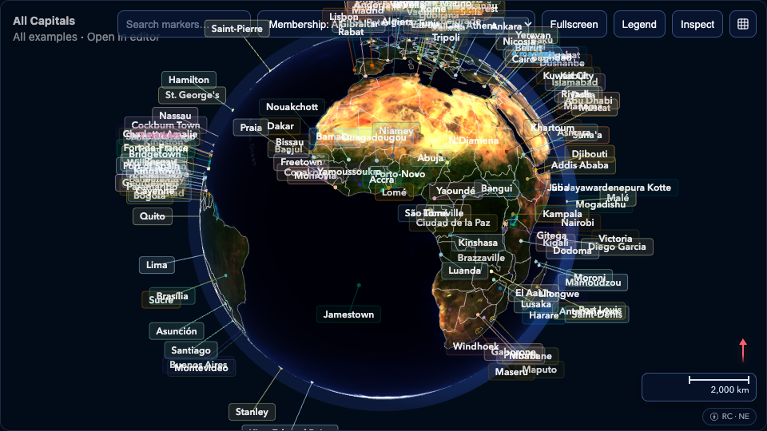
All Capitals
World capital cities from REST Countries API. Filter by UN and NATO membership.
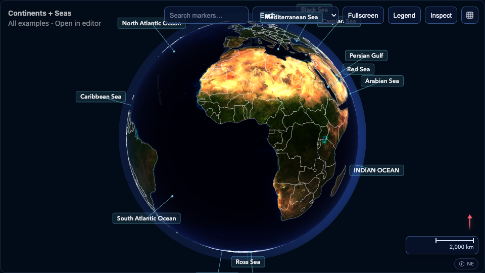
Continents + Seas
Continent boundaries, ocean and sea regions with labels from Natural Earth vector data.
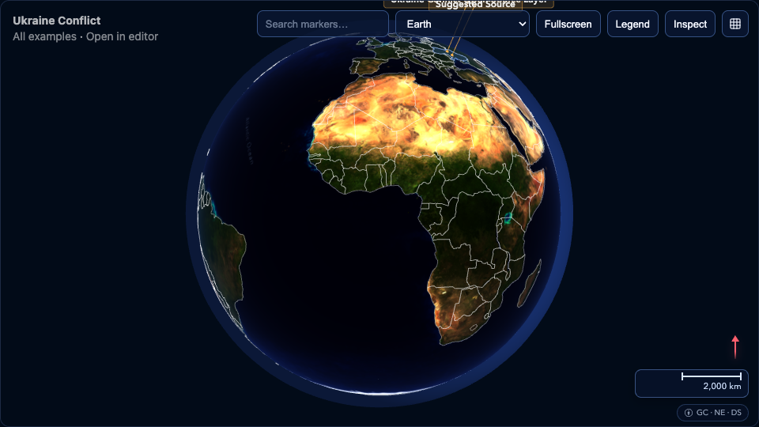
Ukraine Conflict
Open-source context layer with country boundary and advisory markers. Non-tactical overview.
Naval Vessels (OSINT)
Curated naval vessel positions from open-source intelligence reports with trail paths.
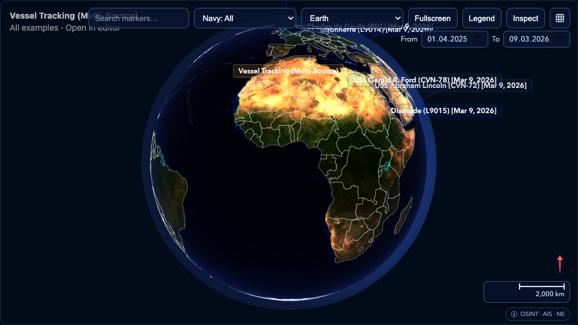
Vessel Tracking (Multi-Source)
Aggregated vessel positions from OSINT reports and AIS feeds with historical trail paths.
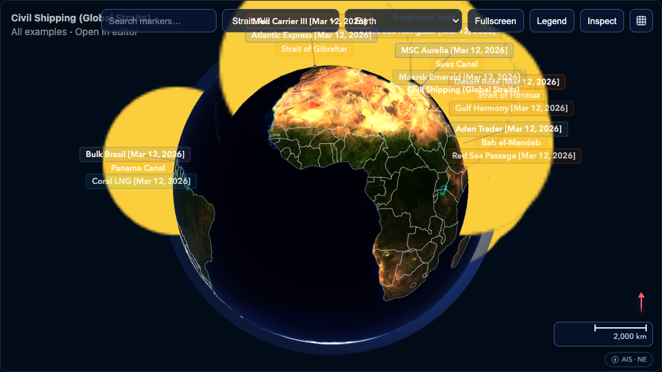
Civil Shipping (Global Straits)
Civil vessels tracked across major shipping chokepoints: Malacca, Hormuz, Suez, Panama, and more.
Moon
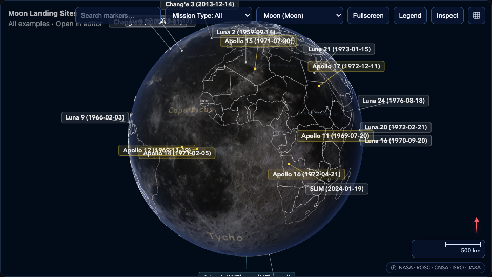
Moon Landing Sites
Historical and recent lunar landing sites from Apollo, Luna, Chang'e, Chandrayaan, and SLIM missions.
Mars
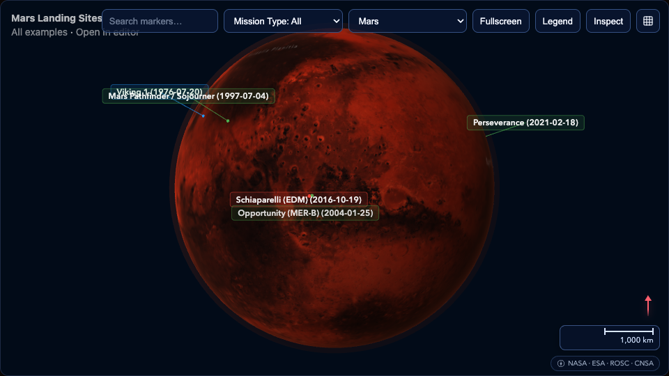
Mars Landing Sites
Successful Mars landers and rovers from Viking to Perseverance, including China's Zhurong.
Jupiter's Moons
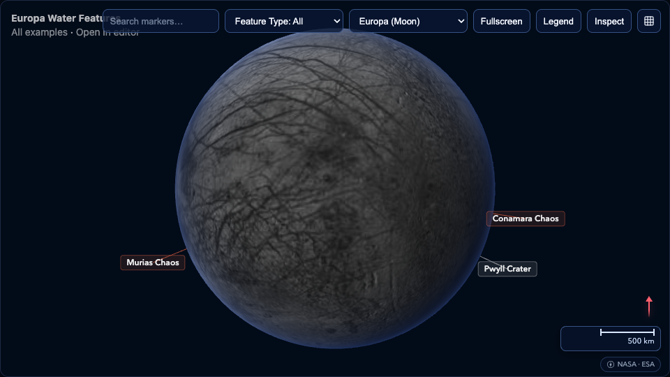
Europa Water Features
Subsurface ocean indicators on Europa: chaos terrain, plume regions, and Europa Clipper targets.
Saturn's Moons
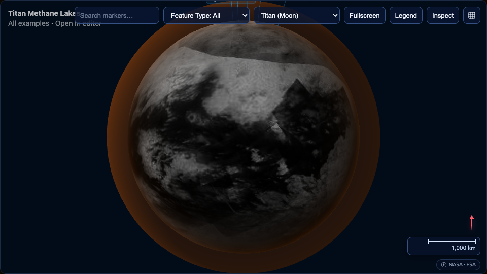
Titan Methane Lakes
Liquid methane and ethane seas on Titan mapped by Cassini radar, plus the Huygens landing site.
Historical Routes
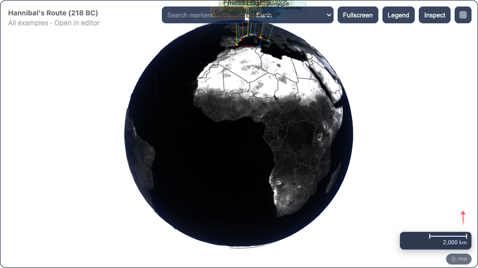
Hannibal's Route (218 BC)
Hannibal Barca's march from Carthage across Iberia, the Pyrenees, Gaul, and the Alps into Italy. Grayscale theme.
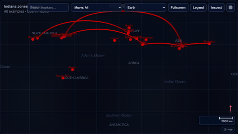
Indiana Jones Itinerary
Flight routes from all five Indiana Jones films — animated red arcs across the globe, toggleable by movie.
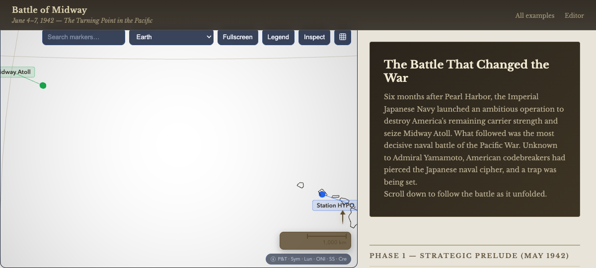
Battle of Midway (1942)
Scrollytelling narrative of the decisive Pacific naval battle. 25 steps with sticky globe, text panels, and historical citations. Demonstrates external text widget control.